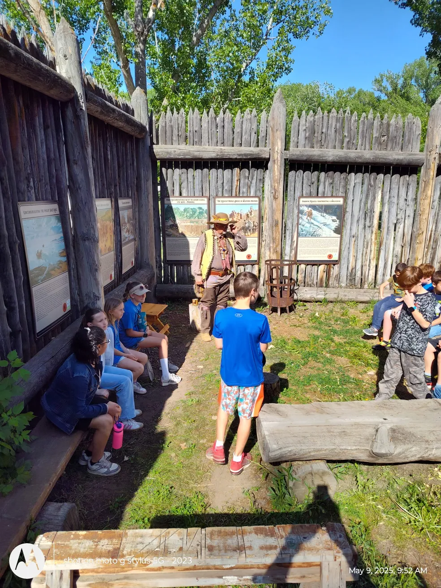
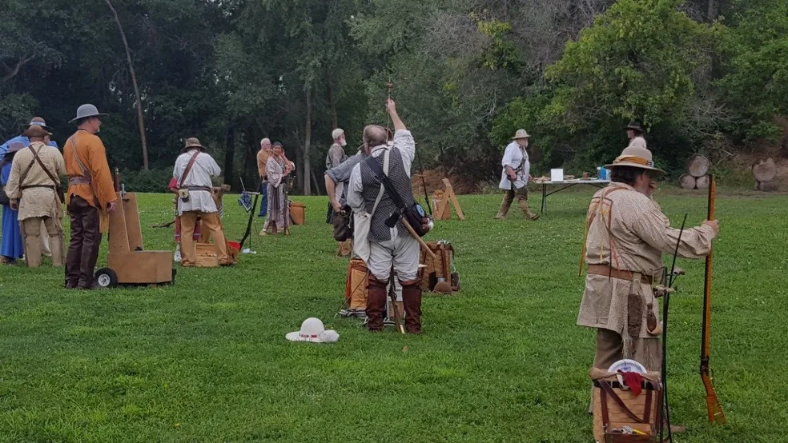
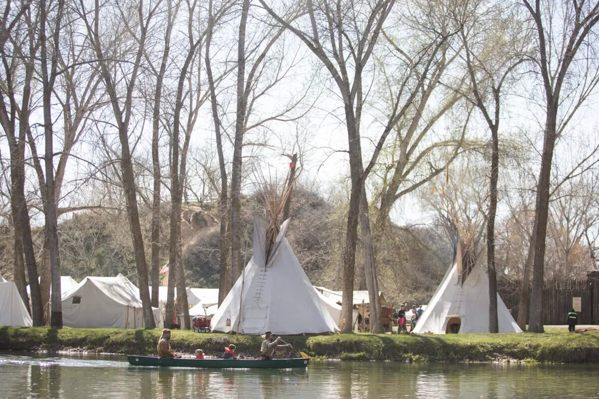

Mountainman Events
Step into the world of the early American frontier. Our events showcase the traditions, skills, and rugged lifestyle of the Mountainman era through rendezvous, workshops, black powder shoots, and living‑history demonstrations. Whether you’re a seasoned reenactor or a first‑time visitor, each gathering offers a chance to learn, participate, and experience history firsthand.
School Days
Date: "May 7th & 8th, 2026"

A hands‑on educational experience designed for students to explore the daily life, skills, and culture of the 1800s frontier. School groups rotate through interactive stations featuring blacksmithing, trapping, fire‑starting, crafts, and historical demonstrations. Perfect for teachers seeking an immersive history field trip.
Boar Black Powder Shoot
Date: "April 4th, 2026"

A competitive black powder shooting event featuring boar‑themed targets and traditional marksmanship challenges. Participants test their accuracy and skill using period‑appropriate firearms in a safe, supervised environment. Spectators are welcome to watch and learn about frontier shooting traditions.
Mountainman Rendezvous
Date: "May 21st-26th, 2026"

The Mountainman Rendezvous is our flagship event, held annually in the summer. It’s a multi‑day gathering that brings together reenactors, craftsmen, and history enthusiasts for a weekend of camping, trading, workshops, and competitions. Experience the sights, sounds, and camaraderie of a true frontier rendezvous.
Download Rendezvous FlyerThanksgiving Turkey Shoot
Date: "November 21st, 2026"

A seasonal black powder shooting event held in the spirit of friendly competition. Shooters compete for prizes—including turkeys—using traditional muzzleloaders. A fun and festive way to celebrate the Thanksgiving season while honoring frontier marksmanship.